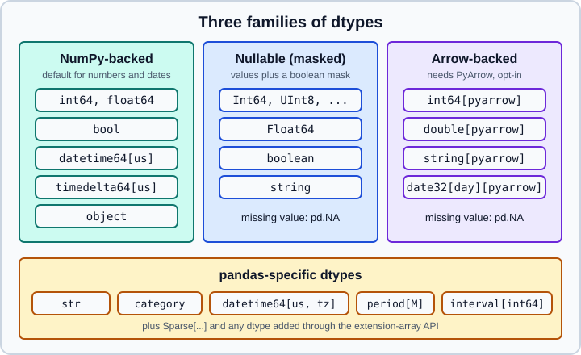

Data Types Overview
|
This content was generated with the assistance of AI and should be verified against the official documentation before being relied on in production. |
Every column of a pandas DataFrame and every Series has exactly one dtype, and almost every surprising result in
pandas code (a column that will not sum, a join that finds no matches, an integer column that turned into floats, a
file that is ten times larger in memory than on disk) traces back to a dtype. This page is the map of the dtype system:
what exists, how pandas picks a dtype when you do not, how to inspect and change dtypes safely, and what is different
from the pandas 1.x and 2.x behaviour that older books and tutorials describe.
It targets pandas 3.1 on Python 3.13 or 3.14 and was checked in October 2026. Every example was run with Python 3.13, pandas 3.1.0, NumPy 2.5.4 and PyArrow 26.0.0, and the printed output is the real output. If you have not installed pandas yet, see Installation and Versions. The storage model behind NumPy dtypes is explained in NumPy Data Types.
What a dtype is
A dtype describes two things: how the values of a column are stored in memory, and which operations are valid on
them (and what those operations return). A Series of dtype int64 stores 64-bit machine integers in a contiguous
NumPy buffer; a Series of dtype category stores small integer codes plus a table of categories; a Series of dtype
datetime64[us] stores 64-bit counts of microseconds since 1970-01-01. The same Python value, say the integer 3, can
therefore live in memory in several different ways, and pandas chooses one for you depending on how the data arrived.
pandas has three families of dtypes, and a handful of pandas-specific dtypes that sit on top of them.

-
NumPy-backed dtypes (
int64,float64,bool,datetime64[us],timedelta64[us],object) store values in a NumPy array. They are the default for numbers, booleans and dates. They have no native "missing" value for integers or booleans, so a missing value forcesfloat64orobject. -
Nullable (masked) dtypes (
Int64,Float64,booleanand thestringvariant) keep a NumPy array of values and a separate boolean mask. A masked-out slot is missing and is shown aspd.NA. The capitalised names are the convention that tells them apart from the NumPy ones. See Nullable Integer and Boolean. -
PyArrow-backed dtypes (
int64[pyarrow],double[pyarrow],string[pyarrow],date32[day][pyarrow],timestamp[us][pyarrow]and others) wrap an Apache Arrow array and need the optional PyArrow package. Missing values arepd.NA. See PyArrow-Backed Data. -
pandas-specific dtypes (
str,category,datetime64[us, tz],period[M],interval[int64],Sparse[int64, 0]) are implemented by pandas as extension types and are always available (the defaultstruses PyArrow when it is installed).
The three families differ mostly in how they represent a missing value and in which library stores and computes the values.
Inspecting dtypes
Build a small frame that touches most of the everyday dtypes and look at it three ways: dtypes, info() and
dtypes.value_counts().
import numpy as np
import pandas as pd
df = pd.DataFrame({
"name": ["Ada", "Grace", None],
"age": [36, 45, 29],
"score": [9.5, np.nan, 7.25],
"member": [True, False, True],
"joined": pd.to_datetime(["2024-01-05", "2024-03-17", "2025-02-01"]),
"plan": pd.Categorical(["free", "pro", "free"]),
"wait": pd.to_timedelta(["1h", "90min", "2D"]),
})
print(df.dtypes)
df.info()Output:
name str
age int64
score float64
member bool
joined datetime64[us]
plan category
wait timedelta64[us]
dtype: object
<class 'pandas.DataFrame'>
RangeIndex: 3 entries, 0 to 2
Data columns (total 7 columns):
# Column Non-Null Count Dtype
--- ------ -------------- -----
0 name 2 non-null str
1 age 3 non-null int64
2 score 2 non-null float64
3 member 3 non-null bool
4 joined 3 non-null datetime64[us]
5 plan 3 non-null category
6 wait 3 non-null timedelta64[us]
dtypes: bool(1), category(1), datetime64[us](1), float64(1), int64(1), str(1), timedelta64[us](1)
memory usage: 291.0 bytesSource: pandas user guide: dtypes.
Three details in this output are new in pandas 3:
-
The text column has dtype
str, notobject, even though it contains a missing value (Nonebecame NaN). -
The datetime and timedelta columns have microsecond resolution (
[us]), not nanosecond ([ns]). -
The class is shown as
pandas.DataFrame(it used to printpandas.core.frame.DataFrame).
DataFrame.dtypes returns a Series indexed by column name, so everything you know about Series applies to it:
df.dtypes.value_counts() counts columns per dtype, and df.dtypes.astype(str).to_dict() gives a plain mapping that
is easy to log or compare in tests.
For a single column use ser.dtype. For the underlying array object (the thing that implements the dtype) use
ser.array; ser.to_numpy() converts to a NumPy array and may copy, and in pandas 3 it can return a read-only view
because of Copy-on-Write.
How pandas infers dtypes
When you do not pass dtype=, pandas infers one from the data. The rules are simple but have consequences:
| Input | Inferred dtype | Remark |
|---|---|---|
|
|
|
|
|
The missing value is NaN, so integers become floats. |
|
|
|
|
|
Pass |
|
|
The default string dtype in pandas 3 (NaN is missing). |
|
|
Mixed Python objects stay as Python objects. |
|
|
Resolution is inferred from the input; dates and strings give microseconds. |
|
|
|
|
|
Bytes and lists are stored as Python objects. |
The helper pd.api.types.infer_dtype reports what pandas sees inside an object column, which is how you find the
stray string in a numeric column:
print(pd.api.types.infer_dtype(["a", "b"]))
print(pd.api.types.infer_dtype([1, "a"]))
print(pd.api.types.infer_dtype([1, 2.5]))Output:
string
mixed-integer
mixed-integer-floatSource: pandas.api.types.infer_dtype.
Numeric dtypes
The NumPy-backed numeric dtypes are int8, int16, int32, int64, their unsigned counterparts uint8 to
uint64, and float32 and float64, plus complex64 and complex128. Defaults are 64-bit: integers are int64
and floats are float64. Smaller types save memory but have a limited range: int8 holds -128 to 127.
print(np.iinfo("int8"))
print(pd.Series([1, 2, 3], dtype="int8").memory_usage(index=False))
print(pd.Series(range(3)).memory_usage(index=False))Output:
Machine parameters for int8
---------------------------------------------------------------
min = -128
max = 127
---------------------------------------------------------------
3
24Source: pandas.Series.memory_usage.
Casting can wrap around silently
astype between integer types does not check ranges. A value that does not fit is wrapped using two’s-complement
arithmetic, with no warning and no error:
print(pd.Series([300]).astype("int8").tolist())Output:
[44]Source: pandas.to_numeric.
If the range is not certain, use pd.to_numeric(..., downcast="integer"), which picks the smallest type that holds
every value, or compare against np.iinfo first. Float to integer casting truncates toward zero, so -1.9 becomes -1:
print(pd.Series([1.9, -1.9]).astype("int64").tolist())
print(pd.to_numeric(pd.Series(["1", "2"]), downcast="integer").dtype)Output:
[1, -1]
int8Source: pandas.to_numeric.
Assigning the wrong type raises (PDEP-6)
Older pandas silently changed the dtype of a column when you assigned an incompatible value into it. Since the
"no upcasting on setitem" rule (PDEP-6) completed in pandas 3.0, an incompatible assignment raises a TypeError
instead of hiding the change:
ser = pd.Series([1, 2, 3])
try:
ser.iloc[0] = 1.5
except TypeError as exc:
print(type(exc).__name__, exc)Output:
TypeError Invalid value '1.5' for dtype 'int64'Convert explicitly first (ser = ser.astype("float64")) if you really want the column to hold fractions. This rule
catches a whole class of "my integer column quietly became float" bugs.
Source: pandas migration guide for 3.0.
Missing values depend on the dtype
Each family has its own idea of "missing", and mixing them is a source of confusion. The full treatment is in Missing Data; the dtype-level summary is:
| Dtype family | Missing value | Consequence |
|---|---|---|
|
|
Comparisons with the missing value are False; integers cannot hold it. |
|
|
|
|
|
Three-valued logic: |
|
|
The same semantics as the nullable dtypes. |
print(pd.NA == 1, pd.NA & False, pd.NA | True)
try:
bool(pd.NA)
except TypeError as exc:
print(type(exc).__name__, exc)
print(pd.Series([1, None], dtype="Int64").sum())
print(pd.Series([1, None], dtype="Int64").sum(skipna=False))Output:
<NA> False True
TypeError boolean value of NA is ambiguous
1
<NA>pd.NA & False is False and pd.NA | True is True because the answer does not depend on the unknown value; that is
Kleene logic. Using a nullable value directly in an if statement raises on purpose, because the answer is unknown.
Strings: str, string and object
In pandas 3.0 the default dtype of a column of Python strings changed from object to a dedicated str dtype. There
are now three ways to hold text, and they behave differently:
print(pd.Series(["a", "b"]).dtype, pd.Series(["a", None]).dtype, pd.Series(["a", None]).isna().tolist())
print(pd.Series(["a", "b"], dtype="string").dtype, pd.Series(["a", None], dtype="string").tolist())
print(pd.Series(["a"], dtype=object).dtype)
print(pd.Series(["a", "b"]).dtype == object, pd.api.types.is_string_dtype(pd.Series(["a"])))Output:
str str [False, True]
string ['a', <NA>]
object
False True| Spelling | Missing value | Notes |
|---|---|---|
|
|
Backed by PyArrow when it is installed, by Python objects otherwise. Only strings are allowed in the column. |
|
|
The older opt-in nullable string dtype. |
|
Anything |
Python objects. Required when a column mixes types. |
The consequences you will meet in real code:
-
ser.dtype == objectis nowFalsefor text. Test text columns withpd.api.types.is_string_dtype(ser), which acceptsstr,stringand, for backwards compatibility, anobjectcolumn that holds only strings. -
select_dtypes(include=object)still returnsstrcolumns in pandas 3.1, but that backward-compatibility behaviour is deprecated and emits aPandas4Warning. Writeselect_dtypes(include="str")(orinclude=["object", "str"]) to be explicit. -
Assigning a non-string into a
strcolumn raises; useobjectif a column must mix types.
All of this, with memory and performance effects, is covered in Text Data and the str Dtype.
Datetimes, timedeltas, periods and intervals
pandas stores datetimes as datetime64[unit], where the unit is one of s, ms, us or ns. Until pandas 2 the
unit was always nanoseconds, which limited dates to roughly the years 1678 to 2262. Since pandas 3.0 the resolution is
inferred from the input, and strings, Python dates and pd.date_range give microseconds, so far-away dates are
representable.
print(pd.Timestamp("2024-01-01").unit, pd.Timestamp("1500-01-01").unit)
print(pd.Series(np.array(["2024-01-01"], dtype="datetime64[ns]")).dtype)
print(pd.Series(pd.date_range("2024-01-01", periods=2)).dtype)
print(pd.to_datetime(["2024-01-01 00:00:00.123456789"]).dtype)
print(pd.Series(pd.to_datetime(["2024-01-01 12:00"]).tz_localize("Europe/Madrid")).dtype)
print(pd.Series(pd.period_range("2024-01", periods=3, freq="M")).dtype)
print(pd.Series(pd.interval_range(0, 3)).dtype)Output:
us us
datetime64[ns]
datetime64[us]
datetime64[ns]
datetime64[us, Europe/Madrid]
period[M]
interval[int64, right]Source: pandas user guide: time series and pandas 3.0.0 release notes.
The unit is kept when it comes from the data (a NumPy datetime64[ns] array stays nanoseconds, and a string with
nine fractional digits needs nanoseconds) and is microseconds otherwise. Convert with ser.dt.as_unit("ns") when
another system requires a specific unit.
The most dangerous consequence is the integer view. Code written for pandas 2 that converts datetimes with
astype("int64") and expects nanoseconds now gets microseconds, a factor of 1000 smaller:
ts = pd.Series(pd.to_datetime(["2024-01-01"]))
print(ts.astype("int64").tolist())
print(ts.dt.as_unit("ns").astype("int64").tolist())Output:
[1704067200000000]
[1704067200000000000]Time zones are handled by zoneinfo (the standard library), not pytz, and pandas 3 no longer installs pytz. A
time-zone-aware dtype is written datetime64[us, Europe/Madrid]. Periods (period[M]) represent spans of time such as
"March 2024", and intervals (interval[int64, right]) represent ranges with open or closed ends. These are the
building blocks of Time Series and Dates and
Time Deltas.
Source: pandas user guide: time series and pandas 3.0.0 release notes.
Categorical data
category stores each distinct value once and the column as small integer codes. It is the right dtype for
low-cardinality text and for ordered labels (low < medium < high), and it can shrink memory by an order of
magnitude:
big = pd.Series(["alpha", "beta", "gamma"] * 100000)
print(big.memory_usage(deep=True))
print(big.astype("category").memory_usage(deep=True))
print(pd.CategoricalDtype(["low", "high"], ordered=True))Output:
3800132
300171
categoryThe first number is the str column with PyArrow installed; the memory saving depends on the string length and
on whether PyArrow is installed. groupby on a categorical column defaults to observed=True in pandas 3, so unused
categories no longer appear as empty groups. The details are in
Categorical Data.
Source: pandas user guide: categorical data.
Nullable and Arrow-backed dtypes
Use a nullable dtype when you need integers or booleans that can be missing without turning into floats or objects:
import pyarrow as pa
print(pd.Series([1, 2, None]).dtype)
print(pd.Series([1, 2, None], dtype="Int64").tolist())
print(pd.Series([True, None, False], dtype="boolean").tolist())
print(pd.Series([1, None, 3], dtype=pd.ArrowDtype(pa.int32())).tolist())Output:
float64
[1, 2, <NA>]
[True, <NA>, False]
[1, <NA>, 3]Arrow-backed dtypes can be requested with dtype="int64[pyarrow]", with pd.ArrowDtype(pa_type) for parametrised types
such as timestamps, or for a whole read operation with dtype_backend="pyarrow". pandas does not make them the
default. In the pandas 3.1 documentation PyArrow remains an optional dependency, and notes saying it would become
required with pandas 3.0 are out of date.
Converting dtypes
pandas has several conversion tools; the right one depends on whether the data is clean, dirty or already mostly typed.
| Tool | Use it when | Behaviour on bad data |
|---|---|---|
|
The data is clean and you know the target. |
Raises |
|
Text that should be numeric but contains junk. |
Junk becomes NaN. The old |
|
Text that should be a date. |
Raises by default; |
|
You want the best nullable dtype for each column. |
Never raises; chooses by content. |
|
An |
Leaves it as |
astype
d = pd.DataFrame({"a": ["1", "2"], "b": [1.0, 2.0]})
print(d.astype({"a": "int32", "b": "float32"}).dtypes.astype(str).tolist())
s = pd.Series(["1", "2", "x"])
try:
s.astype("int64")
except ValueError as exc:
print(type(exc).__name__, exc)
print(pd.to_numeric(s, errors="coerce").tolist())
print(pd.Series([1, 2]).astype(bool).tolist(), pd.Series(["False"]).astype(bool).tolist())Output:
['int32', 'float32']
ValueError invalid literal for int() with base 10: 'x'
[1.0, 2.0, nan]
[True, True] [True]Source: pandas.DataFrame.astype.
The last line is a classic trap: astype(bool) on text means "non-empty", so the string "False" is True. Map
text to booleans explicitly (ser.map({"yes": True, "no": False})) or use the true_values and false_values
arguments of the readers.
Casting floats with NaN to an integer NumPy dtype fails; use a nullable integer:
try:
pd.Series([1.5, np.nan]).astype("Int64")
except TypeError as exc:
print(type(exc).__name__, exc)
print(pd.Series([1.0, np.nan]).astype("Int64").tolist())Output:
TypeError cannot safely cast non-equivalent object to int64
[1, <NA>]Source: pandas.DataFrame.astype.
convert_dtypes
convert_dtypes returns a copy in which each column has the best nullable dtype for its contents. Whole-number floats
become Int64, which is surprising the first time:
raw = pd.DataFrame({
"a": [1, 2, None], "b": ["x", "y", None],
"c": [True, False, None], "d": [1.0, 2.0, 3.0],
})
print(raw.dtypes.tolist())
print(raw.convert_dtypes().dtypes.tolist())
print(raw.convert_dtypes(dtype_backend="pyarrow").dtypes.tolist())Output:
[dtype('float64'), <StringDtype(na_value=nan)>, dtype('O'), dtype('float64')]
[Int64Dtype(), <StringDtype(na_value=<NA>)>, BooleanDtype, Int64Dtype()]
[int64[pyarrow], string[pyarrow], bool[pyarrow], int64[pyarrow]]Column a held a missing value and
whole numbers, so it became Int64; column d was already complete but became Int64 too because every value is a
whole number. Pass dtype_backend="pyarrow" for Arrow dtypes. Note that convert_dtypes converts a str column to
the nullable string dtype (with pd.NA), which is a different missing-value convention from the str default.
In pandas 3.1 the convert_integer and convert_floating keywords of convert_dtypes are deprecated and emit a
Pandas4Warning (the warning class for behaviour that changes in pandas 4); do not use them in new code.
Source: pandas.DataFrame.convert_dtypes.
Choosing a dtype backend
Readers (read_csv, read_excel, read_json, read_html, read_xml, read_parquet and others) and convert_dtypes accept
dtype_backend. The default is NumPy-backed dtypes with the new str type; "numpy_nullable" returns nullable
dtypes; "pyarrow" returns Arrow-backed dtypes.
import io
txt = "a,b,c\n1,x,1.5\n2,,\n"
for backend in ("numpy_nullable", "pyarrow"):
frame = pd.read_csv(io.StringIO(txt), dtype_backend=backend)
print(backend, frame.dtypes.astype(str).tolist())
print(pd.read_csv(io.StringIO(txt)).dtypes.astype(str).tolist())Output:
numpy_nullable ['Int64', 'string', 'Float64']
pyarrow ['int64[pyarrow]', 'string[pyarrow]', 'double[pyarrow]']
['int64', 'str', 'float64']Source: pandas.read_csv.
Selecting columns by dtype
select_dtypes filters columns; include and exclude accept dtype names, NumPy types, and the aliases "number",
"datetime", "timedelta", "category", "bool" and "str".
print(df.select_dtypes(include="number").columns.tolist())
print(df.select_dtypes(include="str").columns.tolist())
print(df.select_dtypes(exclude=["number", "datetime"]).columns.tolist())Output:
['age', 'score', 'wait']
['name']
['name', 'member', 'plan']Note that the timedelta column wait counts as "number". The predicates in pd.api.types
(is_numeric_dtype, is_string_dtype, is_datetime64_any_dtype, is_bool_dtype and others) are the robust way to branch on
a dtype in library code, because they understand extension dtypes; comparing with == does not:
print(pd.api.types.is_numeric_dtype(df["age"]))
print(pd.api.types.is_datetime64_any_dtype(df["joined"]))
print(pd.api.types.pandas_dtype("Int64"), pd.api.types.pandas_dtype("datetime64[s]"))Output:
True
True
Int64 datetime64[s]Memory and dtypes
Choosing dtypes is the cheapest way to cut memory. memory_usage(deep=True) counts the real size of strings and
objects; without deep=True an object column is counted at pointer size only and the estimate is far too low.
print(df.memory_usage(deep=True))
txt = "k,v\n" + "\n".join(f"{['a', 'b', 'c'][i % 3]},{i % 100}" for i in range(1000))
plain = pd.read_csv(io.StringIO(txt))
slim = pd.read_csv(io.StringIO(txt), dtype={"k": "category", "v": "int8"})
print(plain.memory_usage(deep=True).sum(), slim.memory_usage(deep=True).sum())Output:
Index 132
name 33
age 24
score 24
member 3
joined 24
plan 27
wait 24
dtype: int64
17132 2159Source: pandas user guide: scaling to large datasets. For a systematic treatment see Scaling to Large Datasets.
Type promotion in operations
When you combine columns of different dtypes, pandas follows NumPy-style promotion for NumPy dtypes and its own rules for extension dtypes:
print(pd.concat([pd.Series([1, 2]), pd.Series([1.5])]).dtype)
print(pd.concat([pd.Series([1, 2]), pd.Series(["a"])]).dtype)
print((pd.Series([1, 2], dtype="int8") + pd.Series([1, 2], dtype="int64")).dtype)
print((pd.Series([1, 2], dtype="Int64") + 1.5).dtype)Output:
float64
object
int64
Float64Concatenating numbers with text silently produces object, which is a common way for numeric columns to degrade;
check dtypes after every concat and merge in a pipeline. The NumPy rules, including the NEP 50 treatment of
Python scalars, are described in NumPy Type Promotion.
Where older books and tutorials are outdated
| Older statement | pandas 3.1 reality | Changed |
|---|---|---|
Text columns are |
They are |
3.0 (January 2026) |
Datetimes are always |
Resolution is inferred, usually |
3.0 |
Assigning a float into an integer column quietly makes it float. |
It raises |
3.0 |
|
The option was removed; use |
3.0 |
|
Deprecated in 3.1 with a |
3.1 |
Time zones come from |
|
3.0 |
PyArrow becomes a required dependency in pandas 3.0. |
It stayed optional (PDEP-10 was postponed). |
3.0 |
The full list of changes is on What’s New in 3.x and Migrating.
Practical rules
-
Read data with the dtypes you want (
dtype=,parse_dates=,dtype_backend=) instead of fixing the columns afterwards; see CSV and Text Files. -
Run
df.dtypes(ordf.info()) after every load, merge and concat. A column that is unexpectedlyobjectorfloat64is a bug report waiting to happen. -
Keep identifiers with leading zeros (ZIP codes, product codes) as text.
-
Use nullable or Arrow dtypes when missing integers or booleans are real data, not when you only want a smaller memory footprint (use
categoryor smaller NumPy types for that). -
Never rely on
astypeto validate ranges; check them yourself.
For validation and repair of messy columns see Data Cleaning and Preparation.